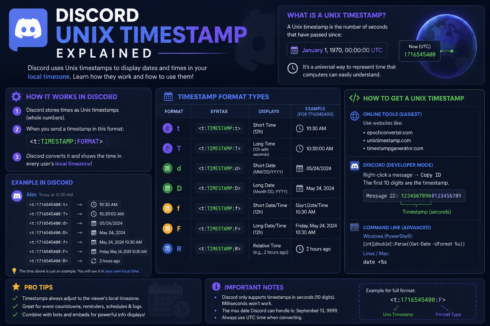

Discord Unix Timestamp Explained

The first time I saw a Discord timestamp code, I honestly thought it was a typo. Someone had pasted
<t:1700000000:F> into a channel, and there it was on my screen as a clean, readable date. What
on earth was that giant number in the middle? Why ten digits? And why did the message show a different time
for my friend in another country than it did for me?
That giant number is a Discord Unix timestamp, and once it clicks, the whole system stops feeling like magic and starts feeling obvious. This guide is the beginner walkthrough I wish I had that day. No jargon dumps, no assuming you code for a living. Just a clear answer to what Unix time is, why Discord leans on it, and how you go from a normal date to that number and back again.
By the end you will understand exactly what a Unix timestamp is, why it is the perfect fit for a global chat app, and how to make one yourself without doing any math. Let us start with the number itself.
TL;DR
- A Unix timestamp is just a count of seconds since January 1, 1970 (the "epoch"). Unix time and epoch time are the same thing.
- Discord uses it because a plain second-count has no timezone attached, so it can show the right local time to every reader.
- The code looks like
<t:1700000000:F>: the number is the moment, the letter is the display style. - To make one, enter a date in the Discord Timestamp Generator and it hands you the code. No calculator needed.
- Discord expects seconds (10 digits), not milliseconds (13 digits).
What is a Unix Timestamp?
A Unix timestamp is a single whole number: the count of seconds that have passed since a fixed starting
point. That starting point is midnight UTC on January 1, 1970, and engineers call it the
Unix epoch. So when you see 1700000000, that is simply "1.7 billion seconds after the
start of 1970," which lands on November 14, 2023.
You will hear this called a few different names, and they all point to the same idea. "Unix time," "epoch time," "POSIX time," and "epoch time on Discord" are interchangeable. If someone mentions a unix timestamp Discord value or asks about epoch time Discord uses, they mean this exact number.
The beauty of it is how boring it is. There is no month, no day, no "AM," no timezone, no daylight saving rule baked in. It is one clean integer that ticks up by one every second, everywhere on Earth, at the same time. That simplicity is the whole point, as you will see in the next section.
Quick note on length
A Discord Unix timestamp is usually 10 digits today. If your number is 13 digits, it is in milliseconds (common in JavaScript and some bots). Divide by 1000 and drop the decimals to get the seconds value Discord wants.
Why Discord Uses Unix Time
Here is the problem Discord had to solve. A server might have members in New York, London, and Tokyo all reading the same message. If someone types "raid at 8 PM," that is useless: 8 PM in whose time? Posting a list of five converted zones is clunky and people still read the wrong line.
A Unix timestamp fixes this cleanly because it has no timezone. The number
1700000000 refers to one exact instant in the history of the universe, full stop. When Discord
receives that number, it converts it into the local time of whoever is looking. New York sees one time,
London sees another, Tokyo sees a third, and every single one of them is correct for the same moment.
It also means daylight saving is handled for you. The Unix number never changes, but the local display adjusts to whatever DST rules apply for each reader on that date. This is why a Discord timestamp format always "just works" no matter where your members live. The number carries the moment; each app does the conversion.
So the short answer to "why Unix time" is: it is the one format that stays unambiguous across the entire planet. For a chat app with global communities, nothing else comes close.
Example Timestamp
Let us break a real one apart so the structure sticks. Take this code:
<t:1700000000:F>Every Discord timestamp has the same three moving parts:
| Piece | In the example | What it does |
|---|---|---|
| Wrapper | <t: ... > | Tells Discord "this is a timestamp, render it." |
| Unix number | 1700000000 | The moment itself, in seconds since 1970. |
| Style letter | F | How it displays (here, a full long date and time). |
With the F style, that code renders as Tuesday, November 14, 2023 10:13 PM
for a reader on US Eastern time, and as a different clock time for someone in Europe or Asia, same instant.
Swap the letter and only the appearance changes; the moment stays locked to that number. For a full rundown
of every style, our Discord timestamp cheat sheet lists all
seven side by side.
Convert Date to Unix Time
This is the part people worry about, and it is genuinely the easiest step. You have two routes: the fast one and the manual one.
The fast route (recommended): open the Discord Timestamp Generator, pick your date and time, and it instantly shows the Unix value and every format code. It reads your local timezone, handles daylight saving, and rejects impossible dates, so you never have to think about the conversion at all. Copy, paste, done.
The manual route (if you are curious): a Unix timestamp is the number of seconds from the 1970 epoch to your target moment, measured in UTC. Doing that by hand means accounting for leap years, your offset from UTC, and whether daylight saving was active on that date. It is very easy to be off by an hour here, which is exactly the kind of error a Discord epoch converter exists to prevent. Unless you enjoy the exercise, let the tool carry it.
Watch the timezone
The single most common conversion mistake is entering a time but forgetting which zone it is in. Two people converting "8 PM" from different countries get two different Unix numbers, and both are right for their own clock. Always confirm the timezone field before you copy the code.
Convert Unix Time Back to Date
Going the other way is just as simple, and it is handy when someone hands you a raw number and you want to know what date it means.
In the generator, there is a Unix field. Paste the number in, and the date and time fields fill themselves in for your selected timezone. That is your "epoch to date" conversion with zero math. You can then read the human date or grab a formatted code from it.
If you want a sanity check without any tool, remember the anchors: 1000000000 is September 2001,
1500000000 is July 2017, and 1700000000 is November 2023. The number grows by
roughly 31.5 million every year. That will not give you the exact day, but it tells you instantly whether a
timestamp is in the right ballpark, which is often all you need to spot a bad value.
Common Errors
When a Unix timestamp misbehaves on Discord, it is almost always one of these five. Run down the list before you assume anything is broken.
- Milliseconds instead of seconds. A 13-digit number shows a date thousands of years in the future. Divide by 1000 to get the 10-digit seconds value.
- Wrong timezone at conversion. The code renders fine but points to the wrong hour, because the source time was entered in the wrong zone. Regenerate with the correct timezone.
- Backticks around the code. Wrapping
<t:1700000000:F>in backticks forces it to show as literal text instead of rendering. Post it as plain text. - A broken wrapper. A missing
<, a lost colon, or no closing>stops Discord from recognizing it. Copy the whole code cleanly. - Decimals or letters in the number. The Unix value must be whole digits only. Strip any
.0or stray characters.
If a timestamp still refuses to render after all that, our dedicated guide on fixing a Discord timestamp that is not working walks through every remaining cause with screenshots. And if you are brand new to the whole system, start with how to use Discord timestamps for the ground-up version.
Skip the math entirely
You now know what a Discord Unix timestamp is and why it exists. The good news is you never actually have to calculate one. The Discord Timestamp Generator turns any date into the correct Unix value and back, timezone and daylight saving included, in about ten seconds.
FAQ
What is a Discord Unix timestamp?
It is a plain count of seconds since January 1, 1970 (the Unix epoch), wrapped in Discord's
<t:UNIX:STYLE> syntax. Discord reads that number and shows it as a readable date or time in
each viewer's own local zone.
Why does Discord use Unix time instead of a normal date?
A Unix number carries no timezone, so Discord can show the same instant correctly to everyone, converting it to each reader's local time automatically. That removes all the "8 PM where?" confusion in a global server.
Is Unix time the same as epoch time?
Yes. Unix time and epoch time both mean the number of seconds since midnight UTC on January 1, 1970. On Discord it is always the seconds version, not milliseconds.
How do I convert a date to a Discord Unix timestamp?
Enter your date and time into the Discord Timestamp Generator. It works out the Unix value for your timezone, handles daylight saving, and gives you the ready-to-paste code in one click.
Does Discord use seconds or milliseconds?
Seconds. Many programming languages return milliseconds, so if your number is 13 digits long, divide by 1000 to get the 10-digit seconds value Discord expects.